Women we love
Cleopatra

‘I will not be triumphed over.’
It seems strange and almost unfitting that a woman who came to define independent strength, determination and power in an age commanded by men should be named after the Greek for ‘glory of the father.’ By the time of her sudden death in 30 BC, glory would be entirely hers. Centuries later, Cleopatra still beguiles us. Much has been written about the Pharoah’s beauty: Roman consul Cassius Dio would speak of ‘a woman of surpassing beauty’. In actuality, her ‘beauty’ is the greatest myth that defines her legacy. It also undermines her real power. Far from the Hollywood visions of Elizabeth Taylor and Angelina Jolie we celebrate today, Cleopatra did not strike Antony and Caesar to their knees with her good looks, but rather with her wit, charm and intellect. Cleopatra’s beauty morphs with our changing fashions but her fierce dynamism never alters.
Rosa Parks
'I would like to be remembered as a person who wanted to be free... so other people would be also free.'
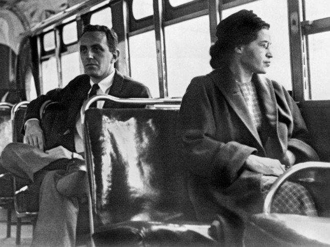In her own humble words, 'all I was doing was trying to get home from work.' In actuality, she did infinitely more: she became an overnight figurehead for the civil rights movement in the US. On December 1, 1955, Rosa Parks, a 42-year-old African-American seamstress refused to give up her seat to a white passenger on the Montgomery City bus. This isolated act and a single reply - 'no, I'm not' - ignited a boycott which continued for 381 days until the city repealed its law enforcing racial segregation on public buses. Rosa's fearless rejection of racial segregation made her 'the first lady of civil rights'. The day itself - the day she was arrested - will forever be known as Rosa Parks Day.
Mary Wollstonecraft
'If women be educated for dependence; that is, to act according to the will of another fallible being, and submit, right or wrong, to power, where are we to stop?'
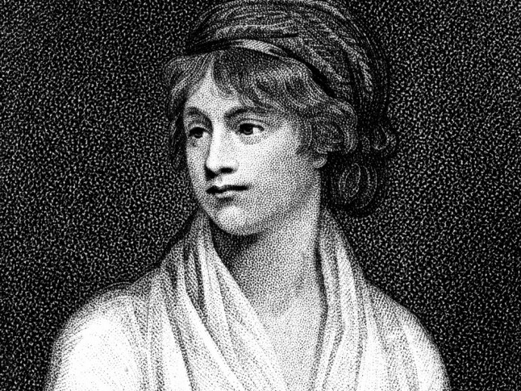In 1792, Mary Wollstonecraft's call for equality and her advocation of women's rights struck 18th century society like a bolt of thunder splitting a tree in two. Thankfully we now live in an age where feminist thought is considered the norm - we have the likes of Caitlin Moran, Lena Dunham and Germaine Greer to applaud for that - but in the late 1700s, Wollstonecraft's suggestion that men and women should be considered equal as rational beings was about as revolutionary as Joan of Arc galloping on horseback with her sword drawn. The publication of 'A Vindication of the Rights of Woman' in 1792 is considered one of the earliest examples of feminist philosophy. It didn't take long for a backlash to occur and it wasn't reprinted until the mid 19th century. A true revolutionary, Wollstonecraft's spirit still endures.
Nora Ephron
'I try to write parts for women that are as complicated and interesting as women actually are.'
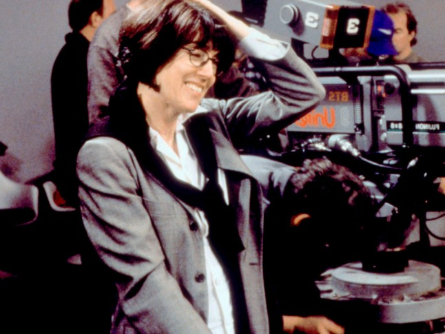Journalist, essayist, playwright, screenwriter, novelist, producer, director...she did it all. Nora Ephron battled gender inequality in an industry that still misrepresents women in front of the cameras and behind the scenes too. Hitting her stride as a journalist at the Post she soon made a name for herself as a Hollywood screenwriter responsible for, perhaps, the greatest romantic comedy of all-time: 'When Harry Met Sally'. Not content with a screenwriting career, Nora's candid books gave a uniquely witty, sharp and - at times - heartbreaking insight into her private life. Her 1983 autobiographical novel, 'Heartburn', depicts the breakdown of her marriage with refreshing honesty and killer one-liners. In a commencement address in 1996, to her old women's liberal-arts college in Wellesley, she would famously say: 'Above all, be the heroine of your life, not the victim.'
Emmeline Pankhurst
'Trust in God - she will provide.'
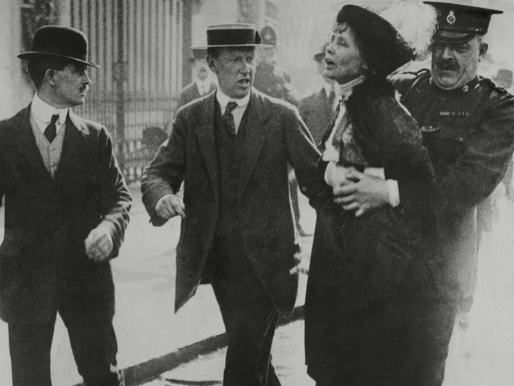As synonymous with women's suffrage as the word 'suffrage' itself, in 1999 Time magazine named Emmeline Pankhurst one of the 100 Most Important People of the 20th Century, saying: 'she shaped an idea of women for our time; she shook society into a new pattern from which there could be no going back.' In 1903 Pankhurst co-founded the Women's Social and Political Union (WSPU) with a clear agenda focused on direct action to win women the vote. 'Deeds not words, was to be our permanent motto', she would later say. These words soon rang true. It was at Holloway Prison that Emmeline Pankhurst would stage her first hunger strike, withstanding violence and abuse to enable all women the right to vote.
Josephine Baker
'I wasn't really naked. I simply didn't have any clothes on.'
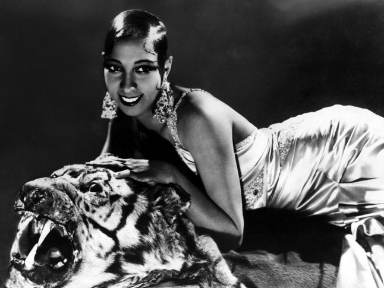Her moves were unmistakable: rhythmic hands, gyrating hips and elastic legs that propelled her round the dancefloor like a flurry of hypnotic windmill sails. New York's 'highest-paid chorus girl in vaudeville' would truly make her name in deco Paris at 'La Revue Nègre' in the mid 1920s. Ultimate womaniser, Ernest Hemingway, called her 'the most sensational woman anyone ever saw.' Yet, despite her popularity and fame, Rosa Parks' fight was hers too. When she arrived back in America in the 1950s she was refused reservations at 36 hotels. She took her battle to the cabaret clubs, refusing to perform to racially-segregated audiences (despite a $10,000 offer by a Miami club). Not even threatening calls from the Klu Klux Klan scared her. In 1963, she stood beside Martin Luther King at the March on Washington. She was the only official female speaker there.
Malala Yousafzai
'I don't want to be remembered as the girl who was shot. I want to be remembered as the girl who stood up.'
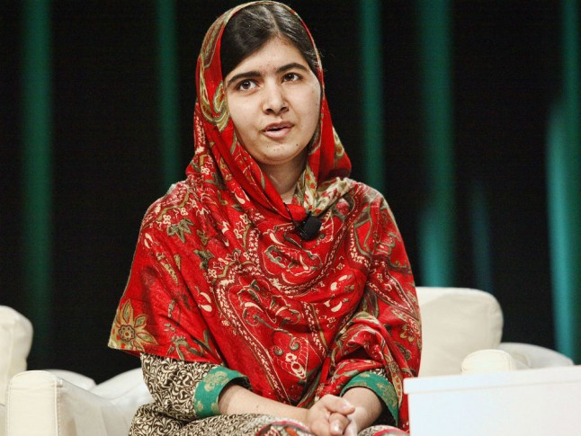On October 9, 2012, a gunman boarded Malala's school bus in Pakistan, asked her name and shot her three times in the head. Her crime? Speaking out about education for girls. Fear lost and bravery triumphed. A figurehead of our time, the shooting of Malala was a watershed moment, propelling a teenage girl into an overnight stateswoman for equal rights. In 2013, Time magazine listed Malala Yousafzai as one of 'The 100 Most Influential People in the World'. On 10 October 2014, Malala co-received the Nobel Peace Prize. Lest we forget, she is still only 17 years old.
Amelia Earhart
'Women must try to do things as men have tried. When they fail, their failure must be but a challenge to others.'
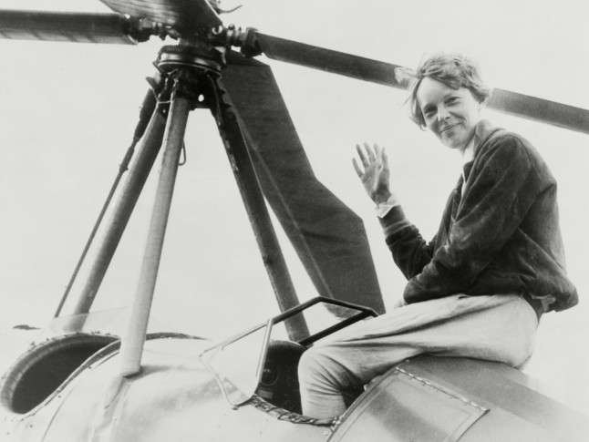The first female aviator to fly solo across the Atlantic Ocean in 1928, she was - incredibly - only the sixth woman to be issued a pilot's license. In 1931, at the same time as setting a world altitude record of 18,415 feet, Earhart also joined 'the Ninety-Nines', an organization of female pilots who banded together to encourage women in aviation. She once described fears as 'paper tigers', adding, 'please know that I am aware of the hazards. I want to do it because I want to do it.' During an attempt to circumnavigate the globe in 1937, Earhart disappeared over the central Pacific Ocean. She was never found. Her final failure became, like she once said, a challenge to us all.
Valentina Tereshkova
'If women can be railroad workers in Russia, why can't they fly in space?'
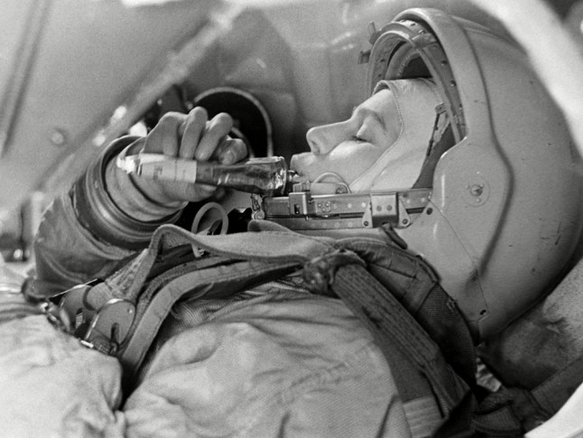In 1963, Valentina, a former textile worker from the Soviet Union became the first woman in space, orbiting the earth forty-eight times. She put the previous four American astronauts - all male - to shame with their combined total of thirty-six. Not only that, she logged more flight time than the total combined times of every American astronaut who had flown before her. She was only 26 years old. Right on, sister.
Frida Kahlo
'Feet, what do I need you for when I have wings to fly?
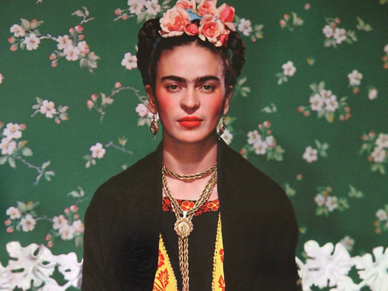To understand Frida is to understand her pain. That doesn’t make her a victim of her own suffering - quite the contrary. The many outwood traumas that plagued her life - including a horrific bus accident leaving her crippled and unable to conceive - gave her the tools in which to paint her inner truth. Her husband Diego Rivera once talked about Frida’s art as 'paintings that exalted the feminine qualities of endurance and truth, reality, cruelty, and suffering.' He would go on to conclude: 'Never before has a woman put such agonized poetry on canvas.' 'I paint my own reality', Frida Kahlo once said. Her paintings are fearless because they paint the conflicting duality of female experience. In some respects, Frida's art is both the rose petal and the thorn.
Florence Nightingale
'The very first requirement in a hospital is that it should do the sick no harm.'
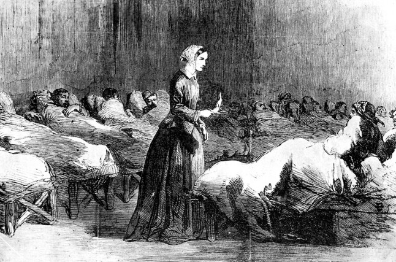Often regarded as 'the lady with the lamp', Florence Nightingale defied her parents to become a nurse. When the Crimean War broke out in 1853, Florence took 38 nurses to Turkey's military hospital - the first time women had been allowed to do so. Her campaign to improve the quality of nursing in military hospitals led to Florence publishing a book called ‘Notes on Nursing’ in 1859, which is still in print today. Yet another female first was yet to come: Florence became the first female member of the Royal Statistical Society in 1858.
Elizabeth Taylor
'I've been through it all, baby, I'm mother courage.'
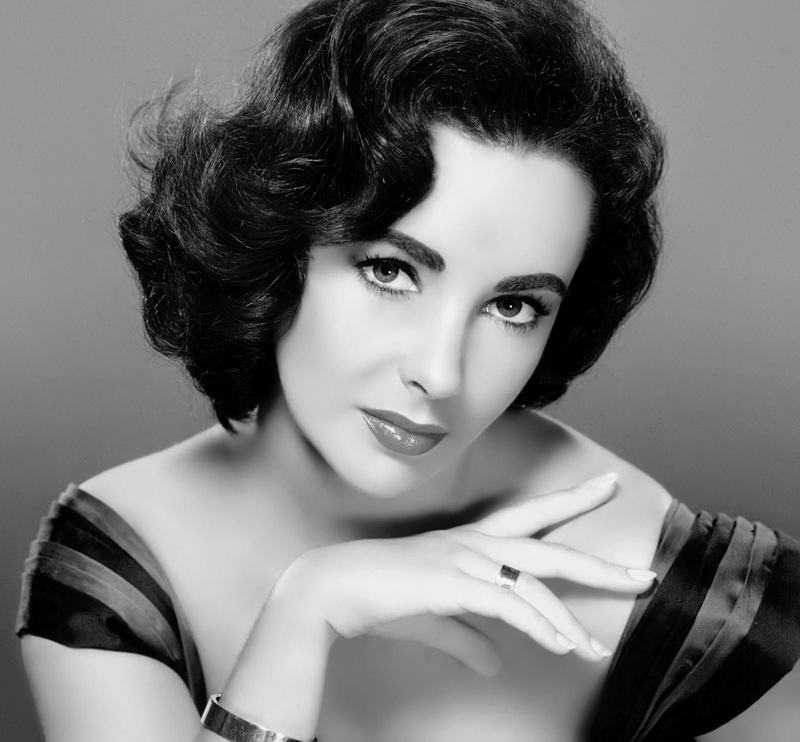Look up 'survivor' in the dictionary and you may well see Elizabeth Taylor glancing proudly up at you, under the weight of some dazzling diamonds, no doubt. Not only did she go through it all, she did so with a Balenciaga handbag crammed full of pithy one-liners to shut up her tabloid critics in the process.
Coco Chanel
'The most courageous act is still to think for yourself. Aloud.'
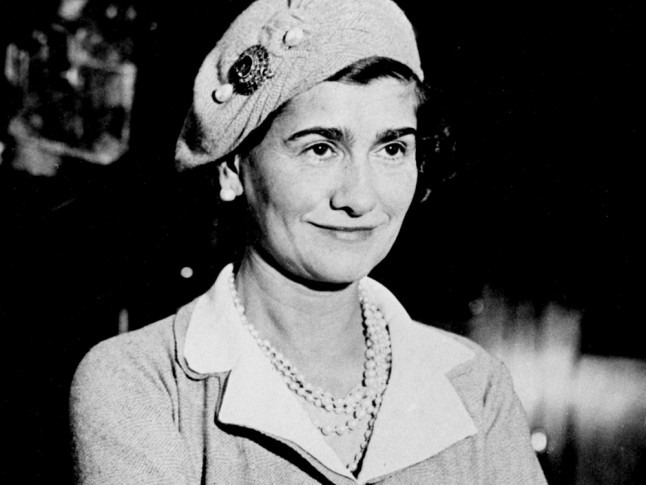Coco Chanel didn't just challenge the gender norms of the time through her own personal life and career - her clothes set the female body free and redesigned it's sillhouette. Men's clothes became women's too: breton tops, crewneck sweaters, trousers, flat heels and suits. Her own figure - boyish frame, cropped hair and tanned skin - fast became a fashionable rejection of the traditional feminine ideal. Not only that, her dresses flipped two fingers up to restrictive corsets. Vogue quickly dubbed her little black dress 'the garçonne' (little boy look).
Marie Curie
'Now is the time to understand more, so that we may fear less.'
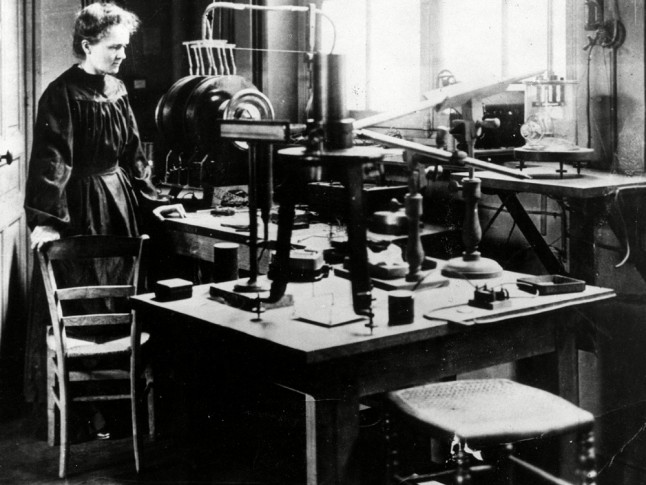Marie Curie won two Nobel Peace Prizes - in 1903 and again in 1911 - but that doesn't mean her male contemporaries gave her an easy time. To the contrary, she battled sexism throughout her entire career. 'I have frequently been questioned, especially by women, of how I could reconcile family life with a scientific career,' she once revealed. 'Well, it has not been easy.' Her critics never wore her down, however. Not only did Marie Curie's research contribute to the development of x-rays in surgery, her tenacious spirit set her apart from her male peers. During World War she even helped equip ambulances with x-ray equipment, driving them herself to the front lines.
Elizabeth I
'I know I have the body of a weak and feeble woman, but I have the heart and stomach of a king, and of a king of England too.'
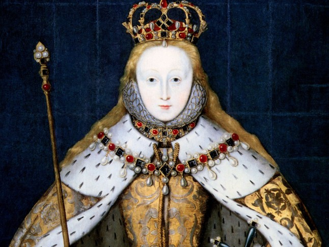She was the daughter of one of the most feared Kings to ever sit on the throne of England - and a Queen whose fierce intellect and courtly charms split the church in two. Elizabeth would become one of England's longest serving monarchs (she ruled for 44 years) and would restore stability, defining her reign so effectively we now refer to it merely as 'Elizabethan'. The best bit? She did so without a man by her side. Instead, Elizabeth declared she was married to her kingdom, referring to her subjects once in 1599 as 'all my husbands, my good people'. Over the decades she would become as feared and revered as her father, Henry VIII, with Pope Sixtus V declaring: 'She is only a woman, only mistress of half an island, and yet she makes herself feared by Spain, by France, by the Empire, by all'.
Edith-L
'I realise that patriotism is not enough. I must have no hatred or bitterness towards anyone.'
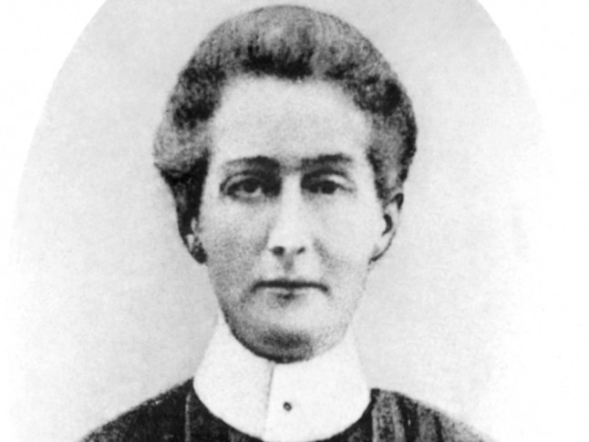Found guilty of treason, sentenced to death and shot by a firing squad at the age of 49, Edith Cavell's courage was heavily punished in her lifetime. The nurse used the Red Cross hospital she was working at to save the lives of soldiers from both sides of the First World War, without any discrimination, as well as smuggling over 200 Allied soldiers from Belgium, famously saying 'I can't stop while there are lives to be saved'.